FLASH Spectral Line Data Validation Report |
|---|
Observation
| SBID | No. of Antennas | Obs Start Date/Time (UTC) |
Obs End Date/Time (UTC) |
Duration (hr) |
Field | R.A. | Decl. | Total Bandwidth (MHz) |
|---|---|---|---|---|---|---|---|---|
| 15873 | 36 | 04-Sep-2020/13:45:40.5 | 04-Sep-2020/15:45:36.7 | 2.0 | FLASH_160P | 23:23:04.6 | -50.05.45.2 | 288.0 |
Processed Image Cube
| ASKAPsoft version |
Cal SBID | Frequency Range (MHz) |
Central Frequency (MHz) |
No. of Channels | Channel Width (kHz) |
Synthesised Beam (arcsec × arcsec) |
Beam Logs | Flagged Fractions | Flagged Antennas | Expected RMS |
|---|---|---|---|---|---|---|---|---|---|---|
| 1.0.16 | 15552 | 711.5--999.481 | 855.4907 | 15552 | 18.519 | 26.19 × 22.71 |

|
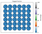 | 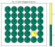 | 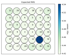 |
Spectral Line
| Noise Spectra - General Properties | |||
|---|---|---|---|
|
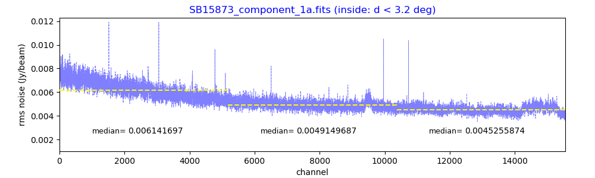
Noise Spectrum (Component 1a) |
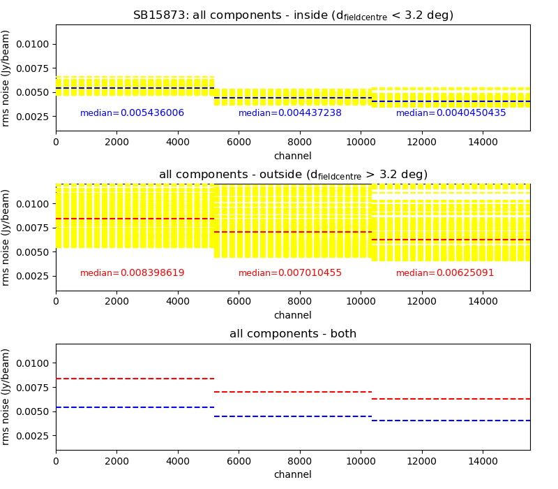
Noise vs Channel |
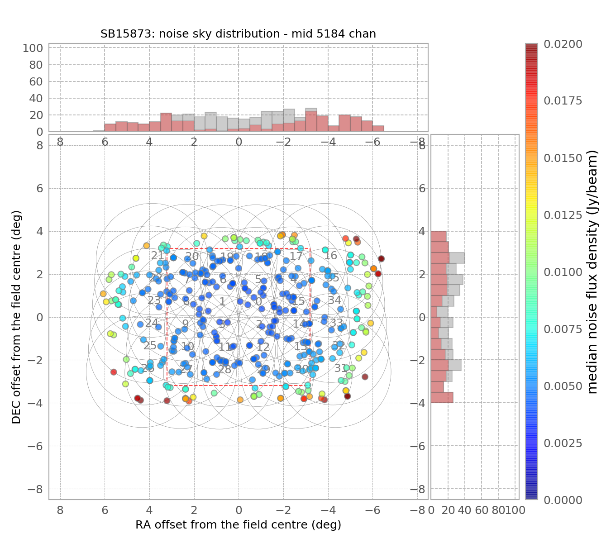
Noise - Sky distribution |

Noise vs Distance |
| Source Spectra - Quick Look at 10 Bright Sources | ||||
|---|---|---|---|---|
|
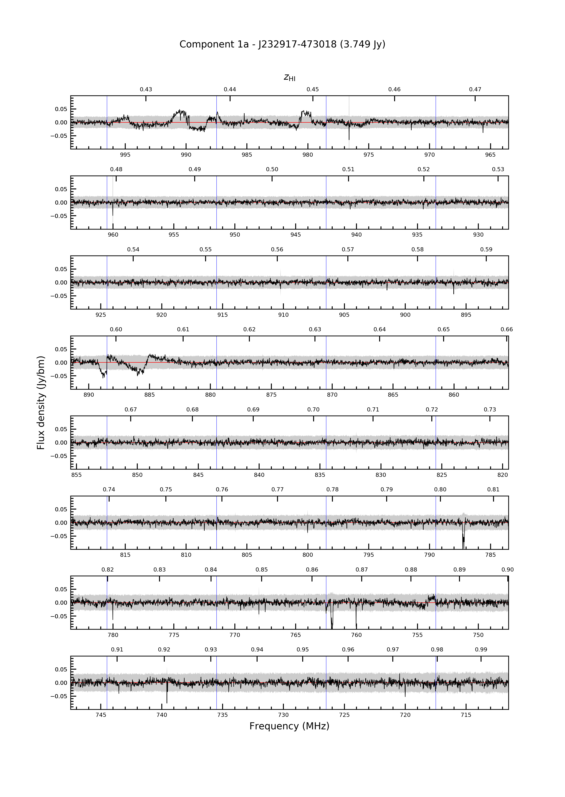
Component 1a |
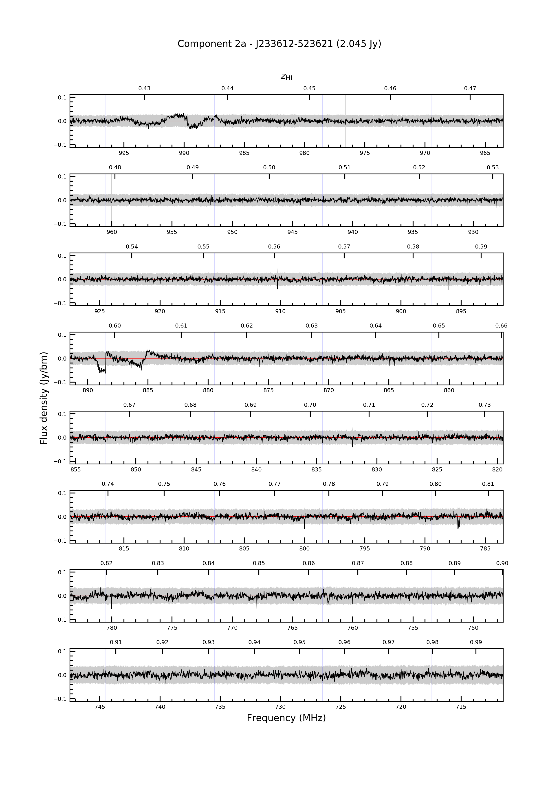
Component 2a |
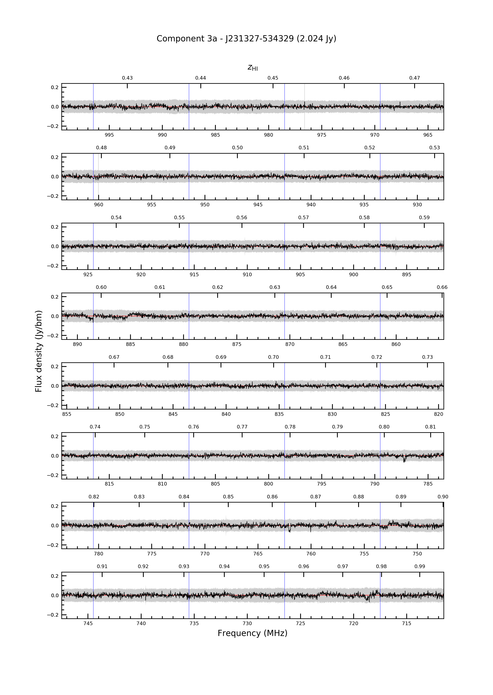
Component 3a |
Component 4a |
Component 5a |
|
Component 6a |
Component 7a |
Component 8a |
Component 9a |
Component 10a |
Continnum Image
| Continuum Image Properties | ||
|---|---|---|

Continuum image |

Continuum image overlay (F > 100 mJy) |
NVSS source list within 6 x 6 sq degree (Cordon+ 1998) RACS source list within 6 x 6 sq degree (McConnell+ 2020) |
Beams Statistics
| Beam Image Cube | Continuum Subtracted Beam Cube | Residual Beam Cube |
|---|---|---|
|
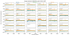
Min, Max, 1 percentile |
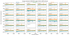
Min, Max, 1 percentile |
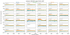
Min, Max, 1 percentile |
|
Stdev, MADFM |
Stdev, MADFM |
Stdev, MADFM |
| Continuum Subtracted Beam Cube | |||
|---|---|---|---|
|
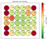
MAD of Max Flux Density |
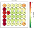
Mean RMS |
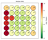
Median RMS |
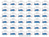
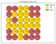
1-percentile noise rank |
Mosaic Statistics
| Image Cube | Continuum Subtracted Cube | Residual Cube |
|---|---|---|
| 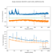 | 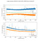 | 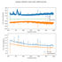 |
| Number of Bad Quality Channel | Number of Missing Data Channel | Bandpass Smoothing Issue* |
n= 9 |
n= 3 |
Yes |
* SBIDs processed prior to March 2021 were affected by issues with bandpass smoothing parameterisation, resulting in a higher incidence of glitches on 1 MHz intervals.
Generated at 2022-11-18 16:26:02.716677
Report bugs to
Hyein Yoon